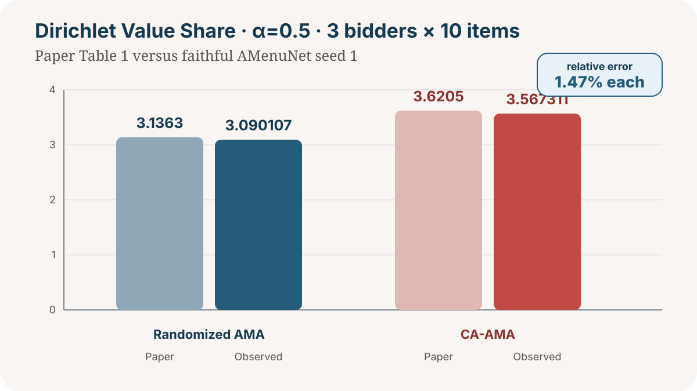

Enhancing Affine Maximizer Auctions with Correlation-Aware Payment
Exact theory contracts, a faithful full-scale Table 1 checkpoint, and explicit unresolved boundaries.
Paper authors: Sun et al.Independent reproduction by DineshAI · local CPU + HF cpu-upgrade · no GPU
1Claim 4 at the paper's 3 × 10 scale ★ exact seed-1 checkpoint

Faithful full-scale result. Randomized AMA is
`3.090107` versus `3.1363`; CA-AMA is `3.567311` versus `3.6205`.
Both revenue errors are 1.47%.
The released AMenuNet parameterization ran 32,000 baseline, 16,000
mutual-payment, and 16,000 hard-argmax post-training updates with
batch size 1,024 and a fixed 20,000-profile test set. IR regret was
`0.006133` versus `0.0031`; ex-post-IR revenue was `3.466351` versus
`3.5623`. Zeroing the correlation payment reduced revenue to
`3.012182`, while reversing rival profiles raised regret to
`0.306815`. The route remains BLOCKED
until its five-seed uncertainty check terminates.
2C1 + C2 — literal scope
The intended construction is reproduced for every tested
$\varepsilon$ and arbitrary $n\geq2$. CA-AMA equals full-surplus
revenue to `1e-14`, while classic AMA's ratio tends to zero.
C1 FALSIFIED literally: a one-bidder deterministic AMA can implement the optimal posted price.
C2 FALSIFIED literally: one bidder has no rival profile, so the stated correlated separation is impossible.
The intended multi-bidder identities remain supported exactly.
Exact sweeps span $n\in\{2,3,5,10\}$ and four $\varepsilon$ values;
an independent enumerator confirms every identity throughout the
paper's intended multi-bidder theorem domain.
3C3 — rival-only DSIC
For fixed rivals, the added payment $p_i^{Cor}(V_{-i})$ is constant
in bidder $i$'s report, so it cancels from each pairwise comparison
between truthful utility and misreported utility.
VERIFIED. Symbolic and exhaustive
finite multi-item checkers pass; own-report dependence is the negative
control and produces a profitable deviation.
This is not a sampled DSIC test: exhaustive checks cover 2–4
bidders and 1–3 items, while an independent symbolic checker
confirms cancellation for every report.
4C5 — four-route boundary
The paper describes a Bernoulli mixture while the public generator
uses convex interpolation. A direct HF CPU pilot produced baseline
`1.480823`, CA-AMA `1.512781`, ex-post-IR regret `0.005571`, and
post-processed revenue `1.471493` on the released-code route.
BLOCKED, not falsified. The exact welfare bound
$623/240=2.595833$ contains the paper's numbers; the search therefore
did not establish a valid counterexample under the claim assumptions.
Four independent experimental, code-audit, and analytical routes
still leave the public specification materially ambiguous for a
faithful replication.
5Audit record
Fixed command, locked Python 3.12 environment, deterministic seeds,
fail-closed verifiers, independent implementations, and adversarial
negative controls accompany every terminal verdict.
27/27
tests passing
8h28m
exact Claim 4 seed runtime
0
GPU hours
No toy or undertrained route is promoted. Claim 4 reports the exact
seed-1 checkpoint while its five-seed aggregate continues; Claim 5
remains blocked with all four research routes preserved.
6 Claim ledger
Scope.C1/C2 literal quantifiers falsified; intended construction supported.